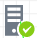

Display resource pools
Perform this task to display all resource pools in CIC.
Procedure
From the left navigation pane, select VDC > Resource Pools.
Parameters
Type: Type of the cloud resource used by the resource pool.
Organization: Organization that uses the resource pool.
CPUs: Number of CPUs in the resource pool.
Memory: Memory size of the resource pool.
Storage: Storage size of the resource pool.
Action: Actions that operators can perform on the resource pool.
To modify the resource pool, click the

icon.